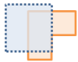
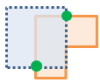
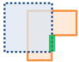
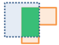

圖層疊加

疊加將兩個或多個圖層合併成一個圖層。 您可以把疊加想成透過一疊地圖互連，並建立包含在堆疊發現之所有資訊的單一地圖。 疊加操作不僅合併線圖徵，還會將參與疊加的所有圖徵屬性傳遞到最終結果。 疊加用於回答一個最基本的地理問題，“什麼在什麼之上？” 例如：
- 哪些宗地位於百年一遇的洪泛區中？ （“在...中”只是“在...上”的另一種表達方式。）
- 哪條道路在哪個國家？
- 哪種土壤類型上的土地利用是什麼？
- 在廢棄軍事基地中的是什麼井？
如果勾選 使用當前地圖範圍，只能看到要疊加於當前地圖範圍中，分析和疊加圖層的圖徵。 如果未勾選，則將疊加分析圖層和疊加圖層中的所有圖徵（即使它們處於當前地圖範圍外）。
選擇疊加圖層
與分析圖層疊加的圖層。
選擇疊加方法
疊加方法定義分析圖層和疊加圖層的合併方式。
- 相交 - 結果將僅包括疊加圖層中與分析圖層中的圖徵相重疊的圖徵或部分圖徵。 當交叉線圖徵或面圖徵時，您可以透過該選項指定做為輸出的圖徵類型。
點與點相交
點與線相交

點與面相交
線與線相交
線與面相交
面與面相交




- 聯合 - 結果包含分析圖層及疊加圖層中的圖徵。 只有分析圖層和疊加圖層都包含區域圖徵時，“聯合”選項才可用
- 清除 - 結果將包含疊加圖層中，不疊加於分析圖層區域的圖徵或部分圖徵。 疊加圖層可以包含區域圖徵、線圖徵或點圖徵。
如果勾選 使用當前地圖範圍，只能看到要疊加於當前地圖範圍中，分析和疊加圖層的圖徵。 如果未勾選，則將疊加分析圖層和疊加圖層中的所有圖徵（即使它們處於當前地圖範圍外）。
結果圖層名稱
在 我的內容中建立並新增到地圖中的圖層的名稱。 它的圖徵類型與疊加圖層相同（面、線或點）。 預設名稱是根據疊加方法以及分析圖層名稱。 如果該名稱的圖層已存在，則系統將要求您提供其他名稱。
使用 將結果儲存到下拉式方塊，可以在 我的內容中指定文件夾的名稱，結果將儲存到該文件夾中。